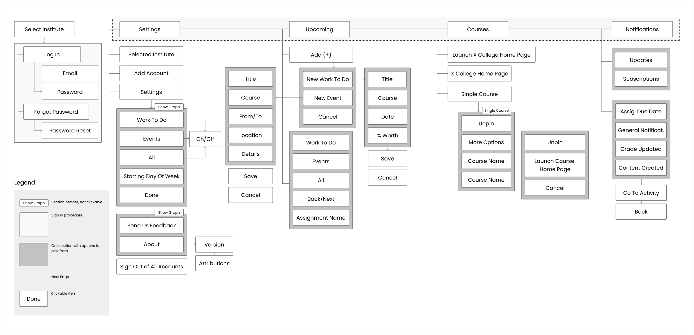
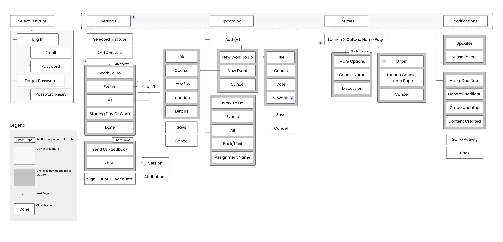

Brightspace Pulse
Case Study - UX Research and Redesign
Brightspace Pulse is a mobile app for students that can help them stay connected and on track with their courses. It gives one easy view of course calendars, readings, assignments, evaluations, grades, and news.
Project information
Duration:
4 weeks
My role:
UX Designer/Researcher
Team size:
Solo Designer
Platform:
Mobile Application
Redesign Challenge
An UX design study is a very effective tool for showing an alternative approach to an existing application. I will analyze an existing iOS mobile application and suggest some improvements to enhance the user experience. Initially, I will lay out an existing flow, and then redesign it. The constraints that I have is that I can not remove any features of the application.
The Application Information
Brightspace Pulse application has two parts. The first one is inside the application but with limited functionality. The students can check the notifications, view their grades, see upcoming deadlines, but they can’t upload assignments . In order to view the whole application the user will have to click on “Launch Langara Home Page” and there they will be taken to another page that looks like the desktop version.
User Analyse
Due to time constraints, it was difficult to conduct actual user research and gain access to user data, so I relied on AppStore feedback.
Pain Points:
Original User Flow
Updated User Flow
1. Removed an extra step for accessing settings.The user had to click on a box first, from there they will see the current account, an option to add another account and the option to go to settings All of these options can be shown on the same page to have less steps for the users.
2. In the original version there are three buttons at the bottom navigation (Upcoming, Courses and Notifications). At the top there is also a box (that is meant to represent the college logo). However that logo is a link to settings, it is confusing for the user. A better way would be to add a settings icon to the footer nav, and keep the logo img at the top.
3. In the courses page there are two buttons for opening “Langara College Homepage”, that opens the homepage that looks like a desktop version. Just having one button at the top is enough as it is very confusing for the user which one to click.
4. In the original version the unpin button was displayed next to More Options Button (where you can also find unpin). From personal experience students do not want to unpin courses that often so there is no need to put this option twice and also on the top user flow hierarchy. I have removed the Unpin option from the Single Course and just kept it in More Options.